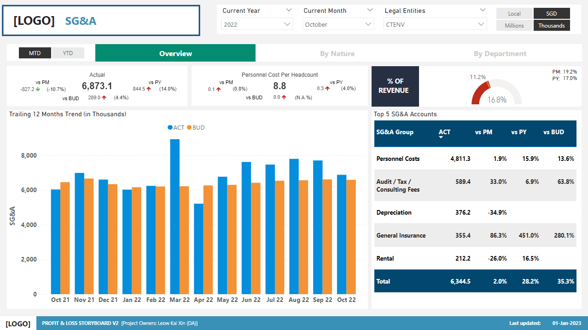

Profit and Loss Details
The Profit and Loss (P&L) Storyboard displays details of the movements and porportion of revenue, material cost and material profit of each business
segment. With this storyboard, the user is able to monitor the financial performance of itself and other subsidiaries over accounting periods of choice.
The Storyboard consists of 5 dashboards:
1. P&L Overview
2. Business Segment Overview
3. Non-material Cost (NMC)
4. Selling, General & Administrative Expenses (SG&A)
5. P&L Analysis.
The first dashboard is the P&L Overview Dashboard. The dashboard showcases a summary of the organisation finances, i.e. the orgainsation's financial position.

The second dashboard is the Business Segment Dashboard. In this dashboard, user is able see the comparsion between actual and budget values of revenue, material cost and material profit across the subsegments present in each business segment.
The third dashboard is the Non-material Cost (NMC) Dashboard. The dashboard contains the actual NMC and NMC Personnel Cost per headcount, the difference between the previous and current year as well as the difference between actual and budget values. The Top 5 NMC accounts table allows the user to quickly identify which accounts that are incurring the highest cost, as well as how much they are exceeding or falling below budget.

The fourth dashboard is the Selling, General & Administrative Expenses (SG&A) Dashboard. Similarly to NMC, the Top 5 SG&A accounts table allows the user to identify which accounts that are incurring the highest cost, as well as how much they are exceeding or falling below budget.
The final dashboard is the P&L Analysis Dashboard. This dashboard is divided into 2 main categories: 1. Top 8 2. All In each category, the user is able to see the performance of 6 different metrics (Revenue, Material Cost, Material Profit, SG&A, NMC, EBITDA) across either the Top 8 countries or by the regions (Europe, Asia, USA) respectively.